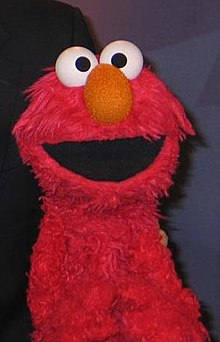

 Elmo is a red Muppet character on the long-running PBS/HBO children's television show Sesame Street.
A furry red monster with a falsetto voice, he has illeism, and also hosts the last full fifteen-minute segment (five minutes since 2017) on Sesame Street,
"Elmo's World", which is aimed at toddlers. He was most often puppeteered by Kevin Clash,
but since his resignation in late 2012, he has been puppeteered by Ryan Dillon.